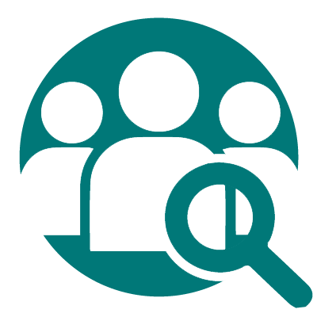

Professionnels
Des informations de professionnels vous seront mis à disposition par rapport aux compétences
Géolocalisation
A l'aide d'un carte (map) une géolocalisation vous permet de rechercher les différents professionnnels et de déterminer l'itinéraire

Compétences
Une liste de différents compétences pour la selection des professionnels